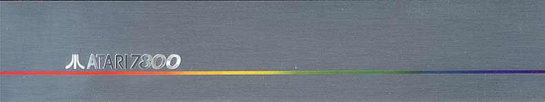
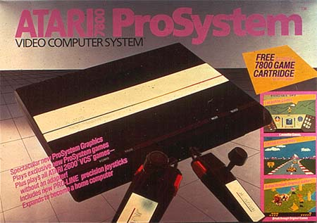
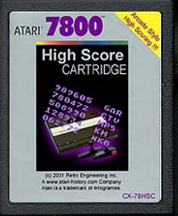
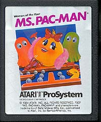
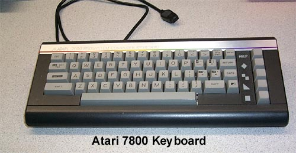
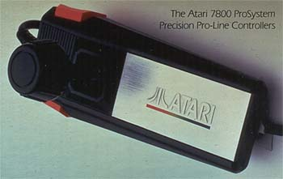

The Atari 7800 ProSystem
The
Atari 7800 ProSystem was Atari's chance at redemption in the video game
market. Atari Inc. spent a good part of 1983 interviewing
thousands of people on what they wanted and didn't want in a video
game console. Atari Inc. through Warner Communications, then worked with General Computer
Corporation who earlier had lost a lawsuit with Atari regarding a "Speed-up"
board for Atari's Missile Command.
Art Ng, Steve Golson and several of GCC's Chip Architect
Designers with assistance from VLSI would architect and design the
GCC1702B "MARIA" Graphics Processor, the heart of the Atari 7800 ProSystem.
The first MARIA chip was numbered
GCC1701. GCC's engineers were big fans of Star Trek, so with
the Enterprise being NCC-1701, they made their chip the GCC-1701.
The final production chip: Maria II was GCC1702B.
The all new graphics chip called MARIA (Also the codename of the 7800 Project)
with almost 100 independent sprites, better color palette onscreen, and
other powerful features would not only allow game designers the ability
to code new and exciting games, but the chip also allowed an original Atari
TIA processor to co-exist side by side with MARIA so that the new console
could also play all of the original Atari 2600 games as well.
Then
as an added bonus, GCC's programmers would also do almost all of
the Atari 2600, 5200 and Atari 8-bit computer games in 1983-1984
for Atari. Atari's programmers in Sunnyvale were jumping ship to start
their own firms. After another batch left to start Imagic, another group
threaten to leave Atari. Steve Ross, head of Warner
Communications contacted GCC about doing games for Atari. Not only
was GCC able to code games for Atari's console, they were doing it in weeks
compared to months. Warner started to call GCC
"The Toaster" (Just pop in the game spec's and out
popped a finished game.)
The
Atari 7800 was designed to be flexible and expandable and even had
an expansion port for future peripherals
to tap into the system bus and video circuitry. The Atari 7800 ProSystem was
the ultimate video game console creation,
a console with features everyone wanted. Gone were the complex 5200 type controllers,
in came a clean and simple ProController, out went the HUGE size of the 5200 and in
came a small and sleek console design.

Within Atari, Inc. from
1983-1984 The Atari 3600 (as the Atari 7800 was called for the first several
months
of the project) was stated as "Company
#1 Priority" and in many Atari Engineering Log Books its noted:
"3600 System takes precedence over Atari
1400/1450 project." Basically Atari was putting everything
and
everyone into the 7800 to make it a winner.
To make sure the system had every bell and whistle possible,
the system was slated to be released with
not only a computer keyboard, but also a High Score cartridge
(Designed by GCC), and a new add-on module
for the Atari 5200 called The "Slam-Pam" which would
have given the Atari 5200 system full
Atari 7800/2600 compatibility to ensure its existing base of 5200
owners could immediately take advantage
of all the hot new games that the 7800 was capable of producing
(Designed by Gary Rubio).
To learn more about
the Atari 3600 Prototype
CLICK
HERE

The Computer Keyboard plugged into
joystick port #2 with an accompanying cartridge turned the
7800 into a full blown 8-bit computer
system. The keyboard even had an Atari SIO (Serial I/O) connector
for using Atari XL Computer System peripherals
like cassette recorders, printers and even a disk drive.
To Learn more about the
Atari 7800 Keyboard
CLICK
HERE
The one truly key feature was the on-board
"Out of the Box" Atari VCS 2600 compatibility. Atari also
wanted to avoid any chance of another
flood of poorly written games for the console, so they
added an encryption key system into its
cartridges, if the checksum key was valid the MARIA chip
would become active and the 7800 was ready
to go, if not then the system would stay in 2600 compatibility mode.
When
Atari was sold to the Tramiels in 1984, the last the thing the Tramiels
had on their minds was selling video games. However, Atari and
Warner had committed to the obligation to GCC for the Atari 7800 and its
games. Reluctantly Jack Tramiel paid a one time "Go
away" amount to GCC, who cashed that check immediately before it
bounced. The Atari 7800 was left to be shelved.
Earlier in the Spring of 1983 Nintendo
approached Atari to license and sell their Famicom system
under the Atari name since Nintendo didn't feel it could compete against
the once mighty video game giant. In August of 1983, Ray
Kassar was let go as Atari's CEO, in the upper management shuffle, the Nintendo
deal slipped through the cracks. Becoming impatient,
Nintendo decided that they would sell their Famicom in the U.S. on their own and called
it The "Nintendo Entertainment System" Released in 1985 it was an instant selling success.
Atari Corp, seeing the sudden resurgence in the video game market decided
it was time to pull the finished 2600jr that Atari, Inc. under Warner Comm.
had developed in 1983 out of mothballs and take the Atari 7800's which
were also completed and sitting around for more then 2 years off
the shelf and sell them in 1986. Well, it was too
little, too late. Nintendo had the market; lock, stock and
barrel. Not to mention Sega with its Master System was
also hot in Nintendo's tail, Atari was running third in a race it used
to run a far lead in first in the past.
Atari 7800 (3600) Technical Documents
(Documents are in Adobe PDF format)

3600
Software Guide
(Courtesy of Bill Hofmann formerly with
GCC
and author of 7800 VideoWriter for
the computer add-on)
Maria-2
Handy Hints
(Courtesy of Kevin Osborn formerly
with GCC)
GCC1702B
"MARIA" Chip Specifications
(Courtesy of Art Ng, formerly with
GCC, one of the designers of the Maria
Chip)
Atari
7800 GCC OS Source Code Listing
(Courtesy of Gary Rubio, former Atari
OOEM Liaison between Atari and GCC)
Atari
7800 Keyboard Programming Guide
(Courtesy of Gary Rubio, former Atari
OOEM Liaison between Atari and GCC)
Atari had planned many new
& exciting features
for the Atari
7800 ProSystem, to read
more:
CLICK
HERE